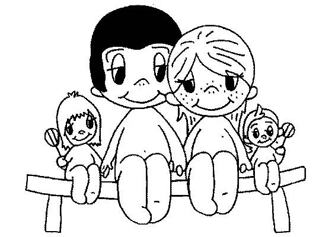

小语
1
小语是京生自出生以来第一个真正接触的女孩。真正接触的意思就是，有过“肌肤之亲”——当然，是在抢玩具的时候，手碰过手，腿碰过腿。他们俩拍第一张合影的时候，小语端正地坐着；京生才四个月大，还不会坐，歪倒在小语身旁。而在为儿女操心的大人眼里，这张合影其实是这样的：

小语爸说：“不如咱们两家结个亲吧。”
小语是独生女。小语爸并非信口开河，而是有长远打算的。自己辛苦赚的钱，与其将来被哪个坏小子骗走了，还不如留给知根知底的京生。
我说：“好啊。不过，有言在先，我的财产是不会都留给小语和京生的。我们将来想生老二。”
小语妈：“呃……好吧……想得周全……”
小语爸赚钱多。以前，我只有羡慕嫉妒恨；现在，我只盼他赚钱越多越好，早日登上福布斯富豪榜。
京生刚刚开始看央视配音版《托马斯和朋友》时，我在淘宝上买小火车玩具，顺便给小语买了两个——自小培养共同的爱好和语言嘛。后来，小语果然也喜欢上了托马斯。她认识所有书上的或者随书贴画的小火车，区分同色的小火车也不在话下。小语有16本托马斯画册，每本都翻得脏兮兮的。她甚至能一字不差地把片头词“多多岛被漂亮的蔚蓝大海包围”从头到尾背下来。
小语妈忧心忡忡：“小女孩儿，怎么不喜欢巧虎，而喜欢小火车啊？”
可惜，共同的爱好还没来得及交流（因为京生还没学会说话），京生就离开了出生的北京城，远赴德国的幼儿园留学。两人聚少离多的日子开始了。
2
来德国之后，我们经常看小语妈写的博客，京生也会凑过来，有时候看见小语的照片，就会指着说“小语”。
1年之后，小语和京生3岁了，我们回了一次国。小语家附近有一家乌克兰餐厅，我们在那里吃饭时，小语和京生随着音乐蹦啊跳啊玩得很欢，只是……完全各玩各的。
也难怪，当时京生还没完全学会说话。
就这样匆匆见了一面。光阴荏苒，半年过去了。京生在幼儿园结识了新朋友，慢慢不再提小语的名字了。小语身边，也出现了别的男孩子围着团团转。
看在眼里，急在心上。趁端午节假期，我们和小语家约好去厦门度假，让小朋友们巩固一下感情。
刚到厦门时，我在看小语妈博客上小语画的画儿。京生凑过来看，问：“这是谁画的画儿呀？”
我说：“是小语画的。”
京生说：“真好看。爸爸，我喜欢小语。”
我问：“你还认识小语吗？”
京生说：“不认识。”
原来，这小子已经把小语忘干净了；原来，不认识也是可以喜欢的。
这次的见面，京生的表现是不俗的。他不停地跟小语说话，而小语则是紧紧拉着妈妈的手一声不吭。我发现京生竟然如此爱说话，别人问什么说什么，不问的时候自己找话说。京生还给小语吃了蘑古力，并且赠送了蓝精灵和在布拉格买的鼹鼠玩具，还指着房间的电话机说：“我有电话！”背后的台词大概是“你打给我啊”。
小语妈说，从这一点来看，京生简直不像我们夫妻俩的孩子，因为我们俩都不爱说话。不过，京生的表现是有道理的。毕竟，这是京生学会说话之后，第一次跟女孩子约会嘛。
在崇武古城的公园里，两人慢慢熟悉起来了。先是京生从地上捡了一朵大红花，在菩萨身后献给小语。小语很高兴，允许合影一张。收到了效果，京生再接再厉地继续献殷勤，拿着我的相机给小语看爸爸拍的照片。
小语蹲在了桌子下面，京生趴在桌子上。然后两人调换。一玩起过家家来，两人突然就变得亲密了。小语管桌子下面叫做“一楼”，桌子上面叫“二楼”，对京生说：“这是我们的家。”京生跟着说：“对，这是我们的家。”小语抱着个毛绒玩具，自然成为了“我们的宝宝”。两人在家里合影。当然，在我们眼里，这张合影其实是这样的：

在鼓浪屿，京生特别依赖小语。小语走到哪里，他就跟到哪里；小语做什么动作，他就学着做什么动作；小语让京生做什么，京生就照做。只要小语走得远了，京生就大叫：“小语你等等我呀！”后来累了，只要小语在视野范围内，京生就安然无事，否则就开始哭嚎。
晚上回到宾馆，两人一起玩托马斯拼图。拼图上标着适合四岁以上儿童，因此超过四岁的小语拼得很快，不到四岁的京生用崇拜眼光地在旁边看，然后说：“小语你拼得真好呀！”我从没听过京生的语气有这么温柔。
回到北京，小语妈邀请我们去家里聚会。小语摆出了很多小火车模型等待京生来，两人玩得高兴，所以我们大人可以好好吃饭聊天。孩子还是有个伴儿好，省了大人多少心。
走出小语家之后，京生跟我说：“爸爸，我和小语玩得真好呀。”
快乐的时光总是短暂的。假期结束，京生又回到了德国。
3
长久不联系，我以为京生又把小语给忘了。直到京生5岁的一天。
那一天，京生玩赛车玩具，突然大喊：“爸爸，妈妈，我和小语都赢了！”他说，这四台车里，小语开的是闪电麦昆。
我：“你怎么突然想起小语来了？”
京生：“因为小语是我姐姐。”
我：“你记错了吧，你说的是你表姐佳霖吧。”
京生斩钉截铁地说：“不，就是小语！”
我追问：＂你怎么突然想起小语来了？＂
京生：＂因为我觉得搬家之前住的地方挺好看的。我觉得小语也挺好看的。＂
再追问搬家之前是什么地方，京生解释：＂就是我和小语一起玩沙子的地方。＂
原来近些年京生住过的地方太多，错把3岁时厦门旅游那次记成了自己家。不知道这两天怎么突然想起了这事儿。
但是，你夸人家姑娘漂亮时干嘛这么严肃，难道不能象征性地羞涩一点吗？
又有一次，京生做噩梦惊醒，说是梦见地震了，弄得全家后半夜都没睡好。第二天睡觉前，自言自语说：＂我不想做噩梦了。我想做美梦。＂
妈妈问：啥是美梦？
京生说：＂见到小语。＂
后来又补充：＂是没有变成怪物的小语。＂
两天后，我问京生前晚做梦了没有。
京生：＂做了。是好梦。梦见我坐上大汽车去幼儿园，遇见了小语。小语在画画。我说我小时候摔了一跤都没有哭。小语就这样式儿的（做拍手状），说真棒！＂
我叹到：＂你怎么最近天天想着小语？＂
京生说：＂因为小语挺好看的。因为我喜欢小语。一直喜欢小语。＂
我再叹：＂你真勇敢。＂
京生说：＂对，我是勇敢先生。”
勇敢先生出自《奇先生妙小姐》，是小语妈送给京生的一套画册。
我暗想：要是老子我从小就像你小子一样读勇敢先生，估计就不会见了女孩就一副怂样，当然今天就不是这个样子了。有诗为证：
沉舟侧畔千帆过， 雏凤清于老凤声。 长江后浪推前浪， 青出于蓝胜于蓝。